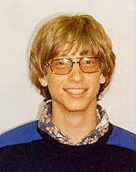

Удивительная статья
Гейтс родился в Сиэтле (штат Вашингтон), в семье корпоративного адвоката Уильяма Генри Гейтса II и члена совета директоров First Interstate Bank, Pacific Northwest Bell и национального совета USWest, United Way Мэри Максвелл Гейтс. Его прадедушка был мэром и сенатором, а дедушка — вице-президентом Национального банка. В семье у Билла прозвище Трей (слово «trey» обозначает тройку в карточных играх и в связано с «номерной» приставкой к имени). У Гейтса есть 2 сестры: старшая — Кристи и младшая — Либби. Гейтс учился в самой привилегированной школе Сиэтла «Лейксайд», где он смог развить свои навыки программирования на школьном мини-компьютере. В тринадцать лет Билл написал свою первую программу — игру «Крестики-нолики» на языке программирования BASIC. В восьмом классе на занятиях по программированию, он познакомился с десятиклассником Полом Алленом. Со своими друзьями Гейтс тестировал компьютер PDP-10 корпорации Digital Equipment, принадлежащей Computer Center Corporation (ССС). Когда время, отведённое Биллу и его другу Полу для работы в ССС, истекло, они взломали программу. За взлом компьютеров четырём студентам школы — Рику Вэйленду, Кенту Эвансу, Полу Аллену и Биллу Гейтсу — запретили работать на компьютерах в течение всего лета. Инициатором наказания стала компания Computer Center Corporation, чей компьютер студенты взломали. По истечении наказания студенты предложили компании находить ошибки в их программном обеспечении за возможность работать на компьютерах компании. Компания согласилась, и Гейтс с товарищами изучали множество исходных кодов программного обеспечения, написанных на таких языках, как FORTRAN, LISP и в машинном коде. Данное сотрудничество продолжалось до 1970 года, пока компания не обанкротилась. В следующем году компания Information Sciences, Inc. наняла четырёх студентов (включая Билла и Пола), чтобы написать программу ведения платёжных ведомостей. Программа нужна была на языке Кобол, взамен ребята получали бесплатное рабочее время на PDP-10. Свою компанию они назвали Lakeside Programming Group, но завершить работу не смогли.
Мой подзаголовок
В 1973 году Билл Гейтс поступил в Гарвардский университет, где встретил своего будущего компаньона Стива Балмера. Спустя 2 года Гейтс был отчислен и сразу стал заниматься созданием программного обеспечения[12]. Впоследствии, с 7 июня 2007 года Билл Гейтс станет считаться выпускником Гарварда — администрация университета примет решение вручить ему диплом[13][14]. В том же месяце он удостоится там почётной докторской степени[15]. В январе 1975 года Пол Аллен прочитал в журнале Popular Electronics статью о новом персональном компьютере Altair 8800. После прочтения статьи Гейтс связался с президентом компании Micro Instrumentation and Telemetry Systems (MITS), разработчиком нового компьютера Эдом Робертсом и сообщил ему, что он и его друг работают над программным обеспечением данного компьютера (хотя на самом деле Гейтс и Аллен не имели к Altair 8800 никакого отношения, но эмулировали тот процессор). Президент MITS пригласил в свой офис Пола и он продемонстрировал рабочий интерпретатор языка BASIC для их компьютера, и через несколько недель Пол и Билл уже работали на MITS. Свою компанию они думали назвать «Аллен и Гейтс», но посчитали что это больше подходит для юридической конторы, и тогда Пол предложил — Micro-Soft, от microprocessors и software. В титры интерпретатора языка BASIC, созданного ими по заказу MITS, приятели включили и такую строку: